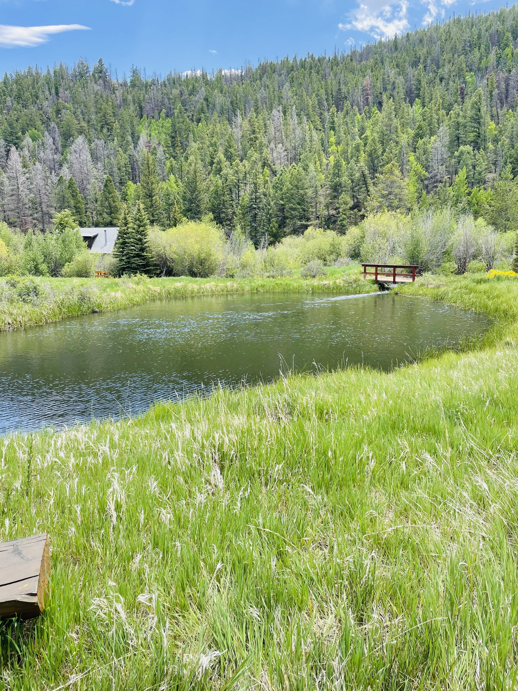

Private Fly Fishing • Arkansas Headwaters
Stocked water with multiple species and great bug life.
Silver Creek Lakes Club is a private fly fishing property in the headwaters of the Arkansas River Valley. Fish a connected network of 3 lakes, 10 ponds, and the shallow stream between them.
- Private membership access
- Guests with members
- Independent or guided days
About the property
Located in Saguache County, Colorado, Silver Creek Lakes Club sits in the upper Arkansas River Valley. The fishing spans a series of stillwaters—lakes and ponds—plus a shallow connecting stream that can fish beautifully during the right windows.
Membership is available only through owning land or a home within the club. Guests are welcome when accompanied by members, with access to independent fishing or guided fly fishing excursions.
Waters
3 lakes • 10 ponds • connecting stream
Setting
High valley stillwater with classic Colorado character
Options
Independent days or guided experiences
Latest update
We post occasional conditions notes and seasonal updates on the Fishing Report page.